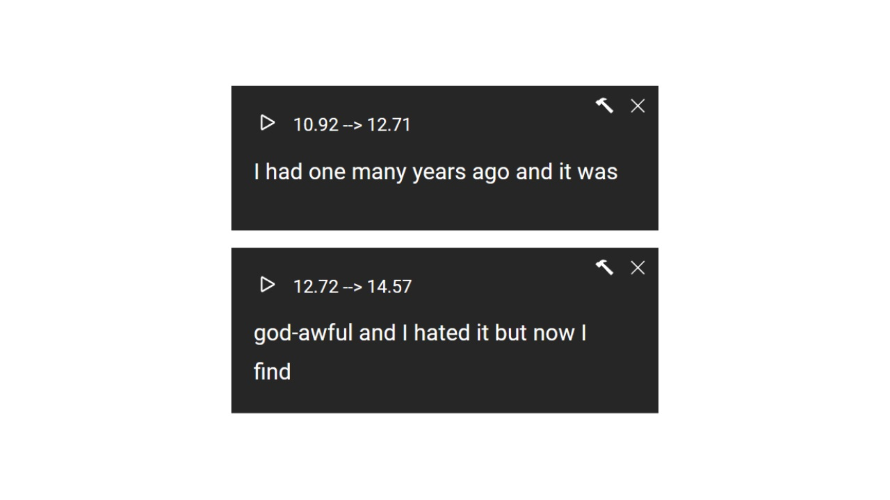
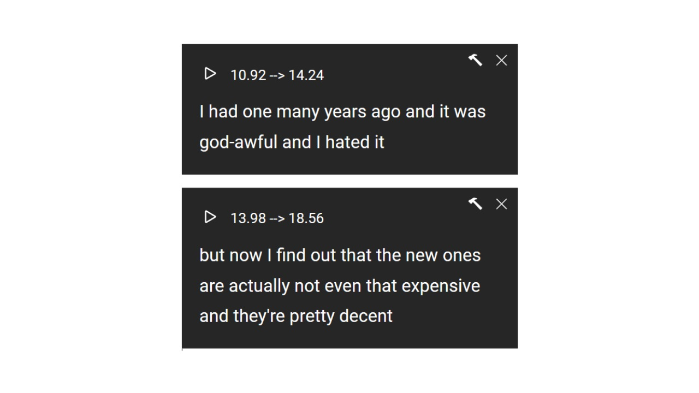
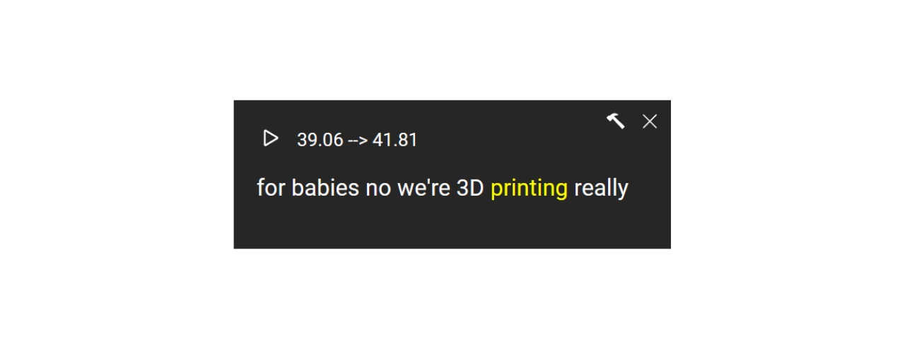

Listen and Repeat
Netflix offers many films for us to learn from, but there are even more on YouTube!
Unfortunately, not every video on YouTube has subtitles provided by the creators. To learn from these videos, we can make use of the subtitles offered by YouTube, namely the CC subtitles. As you may already know, YouTube automatically adds subtitles to uploaded videos (mainly in English), we can utilize these subtitles to learn English.
However, we will quickly discover that due to the fact that these subtitles are machine-generated, sentences are often connected together or separated into different paragraphs.
To solve this problem, we provide a drag-and-drop subtitle feature where you can freely place the CC subtitles into different paragraphs. This way, we can learn through these subtitles.
When you click the play button, the plugin will play the corresponding subtitle, and after it finishes playing, it will automatically pause the video. Additionally, CC subtitles have a great feature that provides an accurate timeline, allowing us to replay the pronunciation of a particular word by simply clicking on the word in the subtitle.
Frequently Asked Questions
1. How to use it?
Go to a YouTube video that provides CC subtitles and then refresh the video page.
2. Can edited subtitles be saved?
On the toolbar, find the first button labeled "Save Progress" and click it to save the subtitles. To load the subtitles, you can click the second button labeled "Load Progress."
3. There are many errors in the subtitles?
Since CC subtitles are generated by machines, errors are inevitable. When using subtitles for learning, extra caution is needed, and the subtitle content should not be completely trusted.